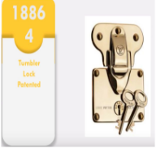
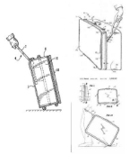
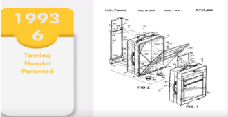

0

0
1854 Louis Vuitton designs flat trunk that could be stacked during steamship travel due to its top flat shape. They were built with frames of wood and steel, with leather, wicker or rubberized cloth to cover it.In Verne’s day, proper travel required a hefty trunk built of wood, leather, and often a heavy iron base. The best trunks were waterproofed with canvas or tree sap,during the oversea traveling constraintsWithout this protection, a suitcase in the hold of a heaving, leaky ship would probably have been wet within a few hours, and crushed by sliding trunks within a few more.
Vuitton is credited with creating the first slatted trunk The brand also built its reputation around the strength of its luggage locks.


1974Perhaps one of the greatest inventions in luggage in the 20th century came from Bernard Sadow, who first patented wheeled luggage in 1974. He came up with an idea while he was dragging the heavy suitcases through customs and he saw an airport employee push a cart of luggage in wheels, he crafted the idea of creating the individual wheels for bags and added it to a line of suitcases.
1989 with air travel becoming more affordable bob plath invents the rollaboard. The first widely adopted suitcases with an extendable handle. 1993 towing handle patented. 2000 the micro luggage of the scooter.
